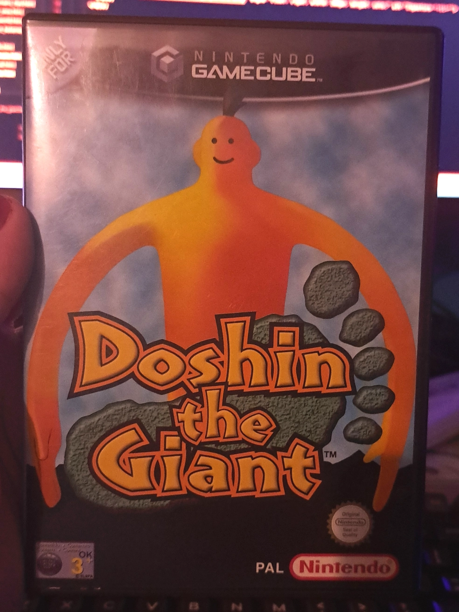
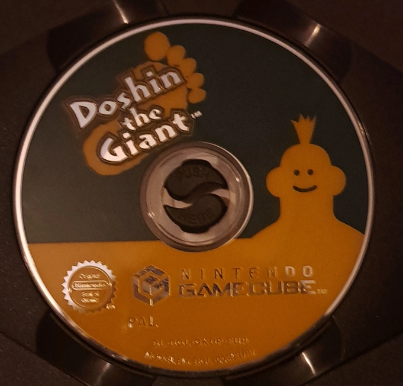
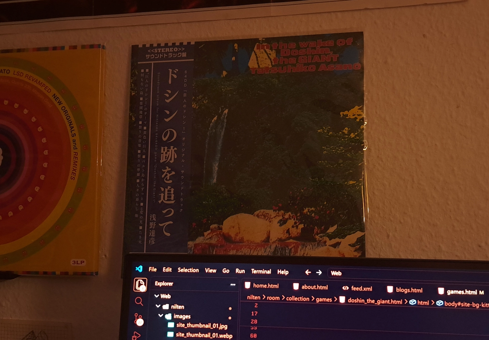

Doshin The Giant
Developed by: Param, Marigul
Published by: Nintendo
Directed by: Kazutoshi Iida
Platforms:
- 64DD (Original)
- Nintendo GameCube (Remake)
Released in:
- 1999 (64DD)
- 2002 (GameCube)
Completed? Yes !


European Box Art of the GameCube remake

Game disc
Doshin The Giant
Developed by: Param, Marigul
Published by: Nintendo
Directed by: Kazutoshi Iida
Platforms:
Released in:
Completed? Yes !
Doshin the Giant is a very special game. It was one of only 9 games to be ever released for the 64DD, a japan exclusive add-on for the Nintendo 64, which would allow players to play games of, what were essentially, floppy disks, which could hold up to 64MB of storage.
In 2002 the game was remastered and ported to the GameCube by Giles Goddard, the same guy who also programmed Marios face from Super Mario 64's title screen. The port made the game available to a broader audience and it even managed to top the charts of best-selling games of 2002 in japan !
With a release on the GameCube, Doshin was finally able to set foot in the west for the first time and in late 2002 the game saw a release in european territories ! However, the game sadly never saw a release in North America. In Super Smash Bros Melee, Doshin even made an apperance as one of the many trophies which could be collected throughout the game, which is probably where the majority of western players first came in contact with Doshin.
In Doshin the Giant, you play as a Yellow Giant named Doshin, who, on one fateful morning, rises from the sea near the shores of an island named Barudo, where the island's inhabitants have been talking about the legend of the illusive Yellow Giant for generations.
Your goal in this game is fairly straight forward ! Doshin needs to help the people living on the island by fulfilling their needs, so that they can build and grow their villages.
Thanks to his size, Doshin can pick up trees and carry them to where the villagers want to build their houses. As Doshin you can also terraform the land ! You can either lower or raise the land, allowing you to create mountains, lakes and seas or to level the ground, so that villagers can propperly build their houses.
By helping out the villagers, Doshin is rewarded with hearts. If he collects enough hearts to form a ring around the screen, Doshin will grow bigger, allowing him to pick up larger objects and to move around faster. However, Doshin can also collect hate !
When pressing the L button, Doshin can transform into his alter ego Jashin, who only has destruction on his mind ! When you destroy a building or stomp on villagers due to your size, you collect skulls. Fill a ring around the screen with them and Doshin (or in this case Jashin) grows as well ! Oddly enough, this is actually the fastest way of growing when starting a new day...
Once a village has grown to a certain size, the villagers will start the construction of a monument. There are a total of 15 monuments, all corresponding to the 4 different villager types living in a village. However, there is in fact one final monument the people of Barudo can construct ! Once you've built all 15 regular monuments the villagers can start the construction of the Tower of Babel, a direct referance to chapter 11 of the Book of Genesis.
Throughout your days on Barudo, the in-game companion, named Sodoru, hints at a certain fate, if the final monument were to be ever built. Spoiler alert: Everybody dies ! Even Doshin !
As soon as the Tower of Babel is built, the whole island sinks into the sea and everything you've built and acomplished in your playthrough just vanishes ! Actually a super intersting but also very depressing way of ending a game like that !
Doshin the Giant was created by Kazutoshi Iida, who has also created Aquanauts Holiday and Tail of the Sun on the PS1 before creating Doshin. I'm personaly a big fan of his way of approaching video games, that video games could be seen as an art form !
This game truly means a lot to me. I stumbled across this game at a very young age. I can't really remember where i first saw it, but it just stuck with me for some weird reason. Doshin the Giant is a relaxing game with a unique concept and a wonderful soundtrack ! A soundtrack so wonderful in fact, i even own it on vinyl ! I'm looking at it right now while im writing this !


And if you've ever wondered what that weird symbol on Miles' shirt is: Well... it's Doshin !
He was with us all this time and he will continue to be with us in the future !